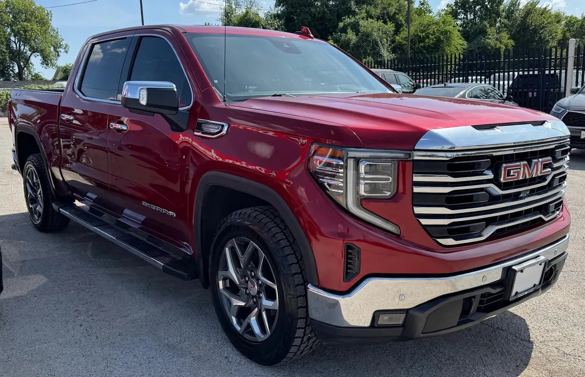

Truck Red ID CCH-370
2022 GMC Sierra SLT

1/5- Year
- 2022
- Mileage
- 103,000
- Type
- Truck
Great for
For anyone who needs a truck for work and everyday driving.
Year, mileage and features come from the inventory data; confirm this unit's exact details with the dealer. This sheet shows no prices: the dealer provides them in writing.
General
| Year | 2022 |
|---|---|
| Make | GMC |
| Model | Sierra SLT |
| Type | Truck |
| Color | Red |
| Mileage | 103,000 miles |
| Drivetrain | To be confirmed |
Model specifications
| Engine | 5.3L V8 (the more common; options: 2.7L Turbo HO, 3.0L Duramax diesel, 6.2L V8) |
|---|---|
| Horsepower | 355 hp (5.3L V8; 310 the 2.7L, 277 the diesel, 420 the 6.2L) |
| Torque | 383 lb-ft (5.3L V8; 430 the 2.7L, 460 the diesel and the 6.2L) |
| Transmission | 8-speed automatic (2.7L) or 10-speed (V8 and diesel) |
| Model drivetrain | RWD or 4WD (varies depending on unit) |
| Fuel economy (MPG) | City: varies depending on engine: 19 (2.7L), 16 (5.3L), 23 (diesel), 15 (6.2L). Highway: varies depending on engine: 22 (2.7L), 21 (5.3L), 30 (diesel), 20 (6.2L) |
| Fuel | Gasoline (diesel optional) |
| Max towing | 13200 (max with diesel; varies depending on unit) |
| Seats | 3 or 5-6 |
| Body style | Pickup (cab doble or crew cab) |
Typical figures for this year and model, taken from public sources (manufacturer, KBB, Edmunds). The dealer confirms the exact engine, drivetrain and equipment of this unit.
Visible in the photos / from the listing name
- Diesel engine
- Sunroof